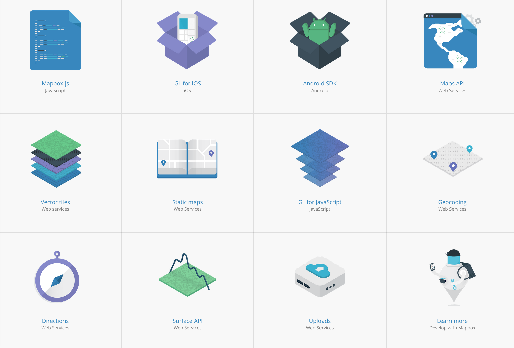
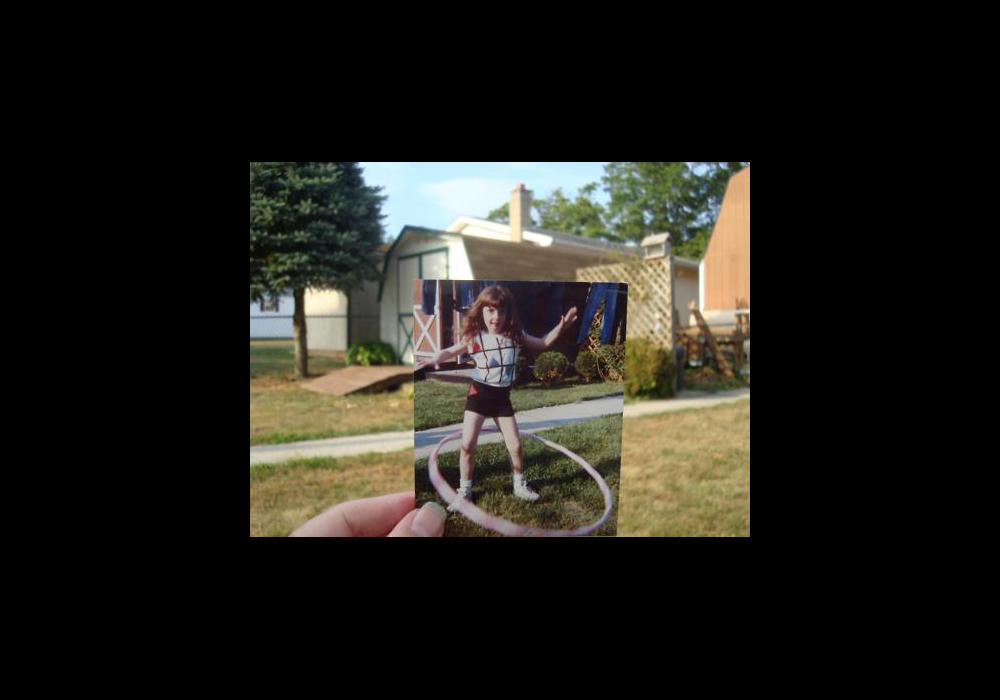
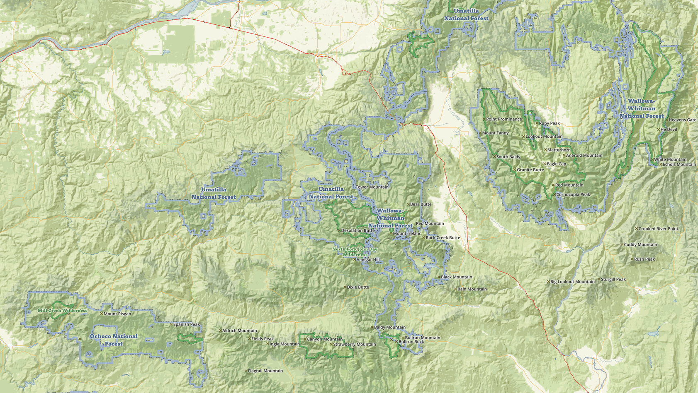
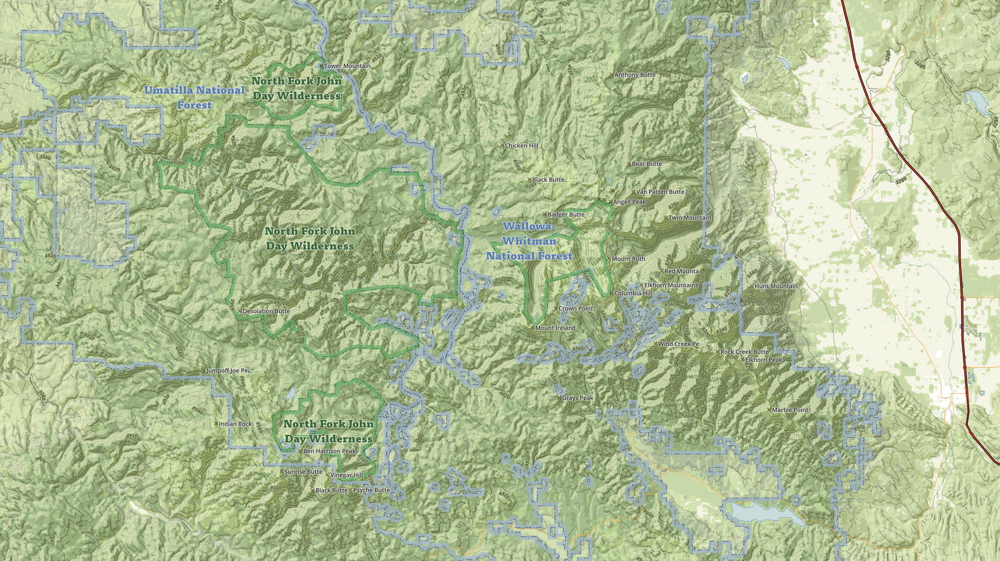
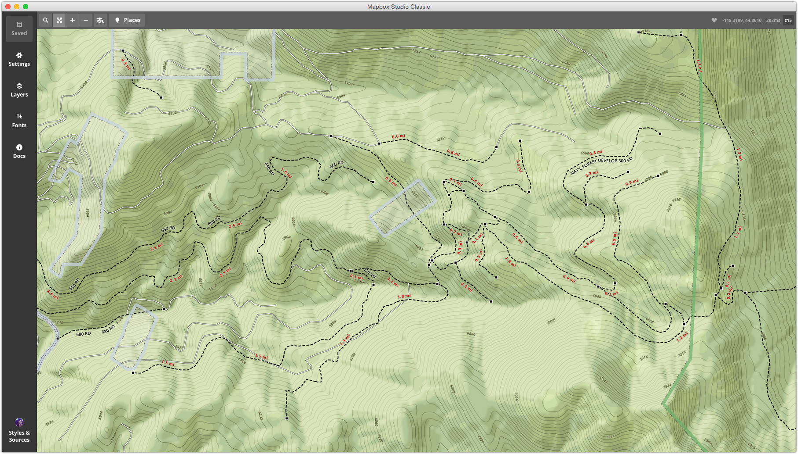
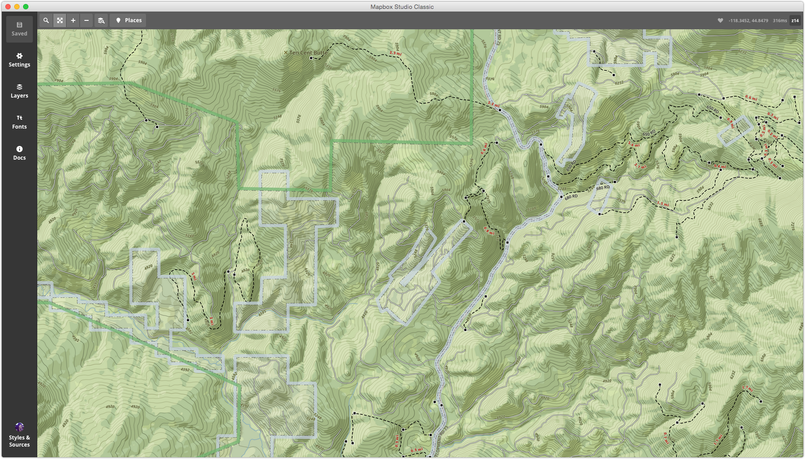

designer as cartographer
hi! i'm @amyleew
designer and navigator @mapbox
mapbox is: platform to design & build maps
 design
designbuild
designer as cartographer
what i talk about when i talk about (graphic) design
definition of graphic:
"giving a clear and effective picture"
origin of design:
"to designate"
set the mood or tone of a thing, visually
what i talk about when i talk about cartography
definition of graphic:
"giving a clear and effective picture"
origin of design:
"to designate"
set the mood or tone of a thing, visually
"Design is visible everywhere, yet it is also invisible-unnoticed and unacknowledged." - Ellen Lupton, Graphic Design Theory
this is a concept in good design. design does not interfere with the message.
i notice this even more in map design
beauty < usability
can we have beauty and usability?
form = function
Elements of good design...
Form
Color
Texture
Typography
Hierachy
Elements of good cartography...
Legibility
Visual contrast
Hierachy
Goals of map design...
- Tyner, Introduction to Thematic Cartography
Clarity
Order
Balance
Contrast
Unity
Narrative
Examples of map design
Alltrails - outdoors map
Hierachy
Texture

Legiblity
Usablity
Accuracy
Map data: global lift
Open source datasets
Combining data in QGIS and ogr2ogr
Advanced PostGIS and SQL queries
Vector tiles for compact global coverage
Blueprint map
Inspiration (themes)
Color, Pattern
Typography
Hierachy
Transition (web)
Usability (beauty)
III. Space between print and web
Features
Legibilty
Type sizes
Color
Output (vector tiles)
IV. Re-hash
Principles
References / recommended reading
Thank you / contact
you now know more than i did.
make me proud :)
thanks. questions?
@amyleew designer @mapbox